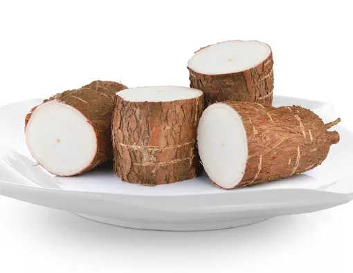
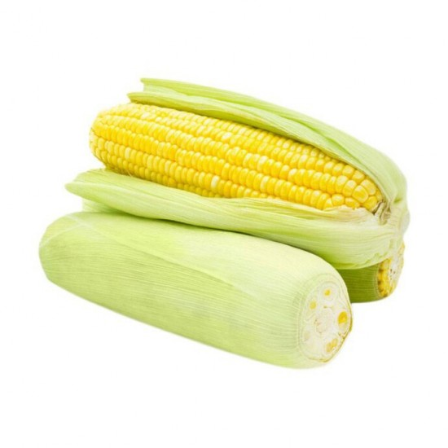
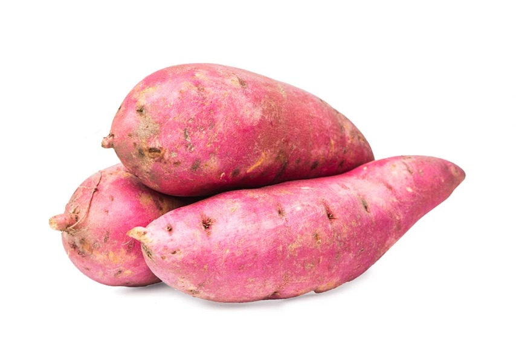
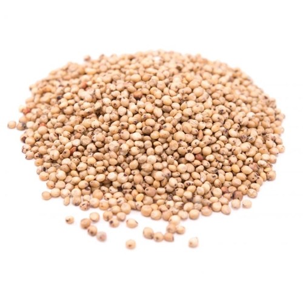
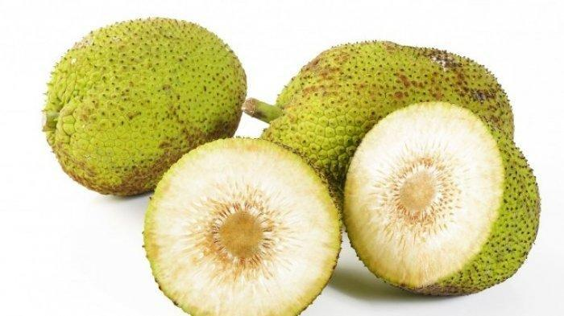
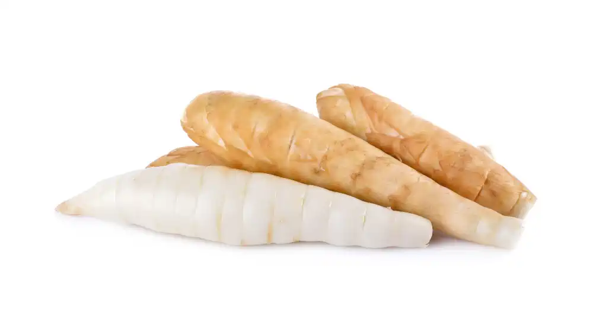

Indonesia punya banyak pilihan karbo lokal
Kimpul cuma pintu masuk. Badan Pangan Nasional menetapkan enam komoditas prioritas diversifikasi, belum termasuk banyak pangan lokal lainnya.

Singkong
Pangan pokok ketiga setelah padi dan jagung. Karbohidratnya kompleks dan seratnya lebih tinggi daripada nasi.
Prioritas NFA
Jagung
Sudah lama jadi makanan pokok di Madura dan NTT lewat nasi jagung. Jagung juga kaya serat dan antioksidan.
Prioritas NFA
Ubi Jalar
Kaya serat & beta-karoten. Beberapa varietas punya indeks glikemik rendah.
Prioritas NFA
Sagu
Sudah lama jadi makanan pokok di Papua dan Maluku. Sagu tumbuh di lahan rawa tanpa menyaingi lahan padi.
Prioritas NFA
Sorgum
Masih sekeluarga dengan padi, tapi bebas gluten serta lebih tinggi protein dan serat.
Pangan lokal
Talas
Sepupu dekat kimpul dengan profil gizi yang mirip. Talas juga sudah lama jadi pangan pokok lokal.
Prioritas NFA
Sukun
Buah bertepung yang mengenyangkan. Bisa direbus, digoreng, atau dijadikan tepung.
Pangan lokal
Garut & Gembili
Umbi lokal kaya pati yang sering diolah jadi tepung. Potensinya besar, tapi belum banyak dilirik.
Pangan lokal